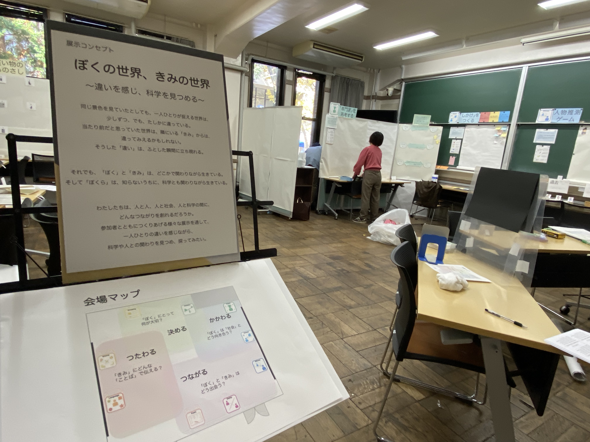

第回駒場祭（2023） 企画特設ページ
UTaTané / うたたね
まざりあう世界、変わりうる私
ご来場いただき、誠にありがとうございます。
短時間でも体験可能な展示を多数ご用意しております．
気になる展示紹介をぜひクリックしてみてください！
企画コンセプトを読む
〜きみとともに，科学とともに〜
私たちは、多くの人やものと関わりながら、日々を生きている。少しずつ異なる私たちの世界は、
様々な出会いを通じて、折り重なり、まざりあっていく。そして、そのまざりあう世界のなかで、
人の感じ方や行動、人をとりまくものの見方や価値はゆらぎ、ときに変わっていく。
私たちは、どうしたら、きみや科学との切り離せないつながりを、
より心地よくしていくことができるだろう？
様々な視点を行き来しながら、みんなで、ともに探ってみたい。

日時： 2023年5月13日（土) 〜 5月14日（日）
場所： 東京大学・本郷キャンパス（教育学部棟109講義室）